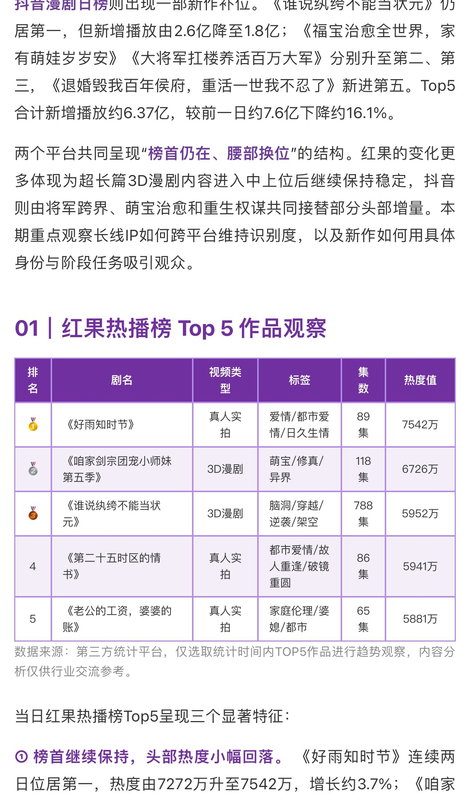

01 / DATA RULES
Data Rules
数据判断规则
统一榜单中的排名、热度、新增播放、题材、内容形态等字段定义，并建立前后期数据对比口径。
排名变化新增播放热度内容形态
把依赖个人经验的榜单分析、重点作品筛选、内容生成与公众号排版， 拆成可执行的规则与 Agent 工作流。



每期都需要重新完成数据整理、作品解读、内容撰写与排版。
哪些作品值得重点分析、榜单变化如何解释，缺少稳定复用规则。
不同文章在结构、表格、字号、配色和产品文案等方面容易出现差异。


统一榜单中的排名、热度、新增播放、题材、内容形态等字段定义，并建立前后期数据对比口径。
用明确规则判断哪些作品值得进入深度分析，而不是每期依赖人工主观选择。
要求 Agent 从内容形态、题材、人物关系、开场钩子、IP 复用、多语种发行和平台变化等维度，提炼 2–3 个真正值得关注的变化，而不是简单复述榜单。
固定文章结构、表格字段、字号、紫色视觉体系、产品文案，以及 HTML / Markdown 输出格式。
不是直接要求“写一篇榜单推文”，而是明确分析维度、字段优先级、重点作品筛选方式和最终任务目标。
前言 / 核心变化
TOP 榜单 / 重点作品
趋势洞察 / 产品能力推荐 / CTA
把标题、前言、TOP 榜单、重点作品、趋势洞察、产品能力推荐与 CTA 固定成结构化模块。
检查核心结论是否有数据支撑、是否过度推断、内容形态是否准确、是否重复表达，以及产品推荐是否与洞察相关。
可进入后续编辑与发布环节
最终直接生成 HTML、Markdown、长图与其他可进入后续编辑环节的素材，而不只是一段聊天文字。
从 8 月开始，订阅号小号专门发布国内短剧日榜和国外短剧周榜，用差异化内容触达积累自然流量。以上数据为三周内的自然流量表现记录。
把原本人工 SOP 拆解为可以被 Agent 执行的阶段。
设计固定角色、任务目标、分析维度、输出结构和质量检查 Prompt。
建立数据字段、重点作品筛选与趋势分析规则。
统一 HTML、Markdown、表格、字号、配色和 CTA。
结合真实输出和内容表现持续调整 Prompt 与生产流程。